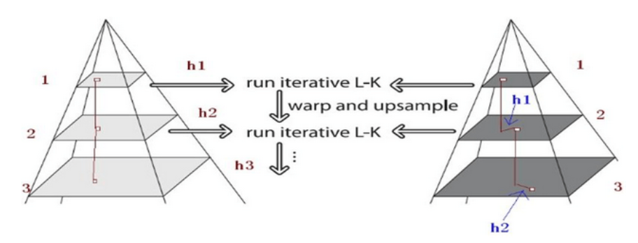

光流法
在前两天看论文的时候看到了光流法(optical flow)，之前只是听说过没有了解，所以现在了解一下。
简介
光流(Optical flow or optic flow)是关于视域中的物体运动检测中的概念。用来描述相对于观察者的运动所造成的观测目标、表面或边缘的运动。光流法在样型识别、计算机视觉以及其他影像处理领域中非常有用，可用于运动检测、物件切割、碰撞时间与物体膨胀的计算、运动补偿编码，或者通过物体表面与边缘进行立体的测量等等。
算法(Lucas–Kanade)
光流法有多种算法，似乎最常用的是Lucas–Kanade算法，它计算两帧在时间$t$到$t+\delta t$之间每个每个像素点位置的移动。由于它是基于图像信号的泰勒级数,这就是对于空间和时间坐标使用偏导数。
LK光流法的假设条件
1.亮度恒定：一个像素点随着时间的变化，其亮度值（像素灰度值）是恒定不变的。这是光流法的基本设定。所有光流法都必须满足。
2.小运动： 时间的变化不会引起位置的剧烈变化。这样才能利用相邻帧之间的位置变化引起的灰度值变化，去求取灰度对位置的偏导数。所有光流法必须满足。
3.空间一致：即前一帧中相邻像素点在后一帧中也是相邻的。这是LK光流法独有的假定。因为为了求取x,y,z方向的速度，需要建立多个方程联立求解。而空间一致假设就可以利用邻域n个像素点来建立n个方程。
图像约束方程
光流法的基本方程，可以写为:
其中$I(x, y, z, t)$ 为位置在$(x,y,z)$,时间为$t$的像素点。$I(x+\delta x, y+\delta y, z+\delta z, t+\delta t)$为后一帧的位置
我们假设移动足够的小，那么对图像约束方程使用多元泰勒展开，可以得到：
H.O.T是泰勒级数展开式的高阶项，小运动情况下可以 忽略为0.
根据第一个方程，我们可以得到：
等式两边同除以$\delta{t}$:
简化一下：
那么$V_{x}$,$V_{y}$,$V_{z}$就是三个方向上的速率，也可叫做$I(x,y,z,t)$的光流。
移动项来求解方程：
化成矩阵形式：
这时候有三个未知数，但是只有一个方程，需要引进其他的条件来求解光流。 LK算法就是用了第三个假设空间一致,（按照我的理解不一定对）既然相邻的像素点在后一帧也相邻，那么就可以认为这个区域内的像素点的光流(瞬时速度)是一致的。LK算法是认为在$3 \times 3$的领域内9个像素点光流一致，所以可以得到如下方程：
$n=9$
化成矩阵形式：
记作：
可以使用最小二乘法来解决这个问题：
那么就有：
其中的求和是从1到n
由于LK算法假设是小位移，为了解决大位移问题，需要在多层图像缩放金字塔上求解，每一层的求解结果乘以2后加到下一层

参考：
光流法维基百科